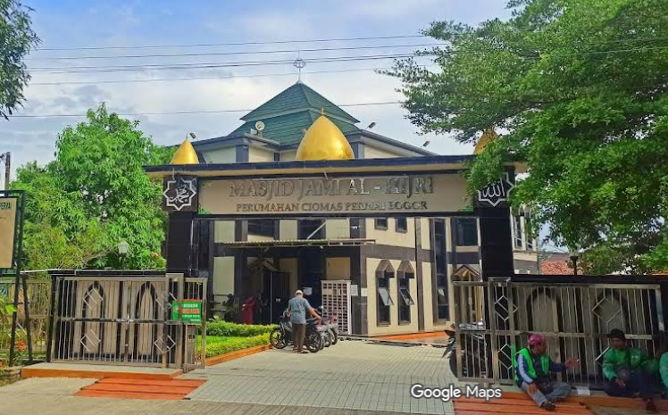

Memperingati Tahun Baru Islam 1448 H
Kegiatan ini diselenggarakan oleh DKM Masjid Jami' Al Hijri sebagai bentuk syukur dan berbagi di awal tahun Hijriyah.
Kami mengundang seluruh jamaah dan masyarakat untuk hadir dan memeriahkan acara ini. Semoga menjadi ladang pahala bagi kita semua.

Klik tombol di bawah untuk melihat peta dan petunjuk arah.
Hubungi panitia untuk informasi lebih lanjut atau konfirmasi donasi:
💡 Atau kunjungi halaman Kontak untuk detail lengkap.
Total donasi sementara Rp 10.100.000 dari 55 donatur. Masih dibutuhkan Rp 13.000.000.
💡 Jika dana tersisa, akan dialokasikan untuk kegiatan PHBI dan DKM.
💰 Lihat Daftar Donatur